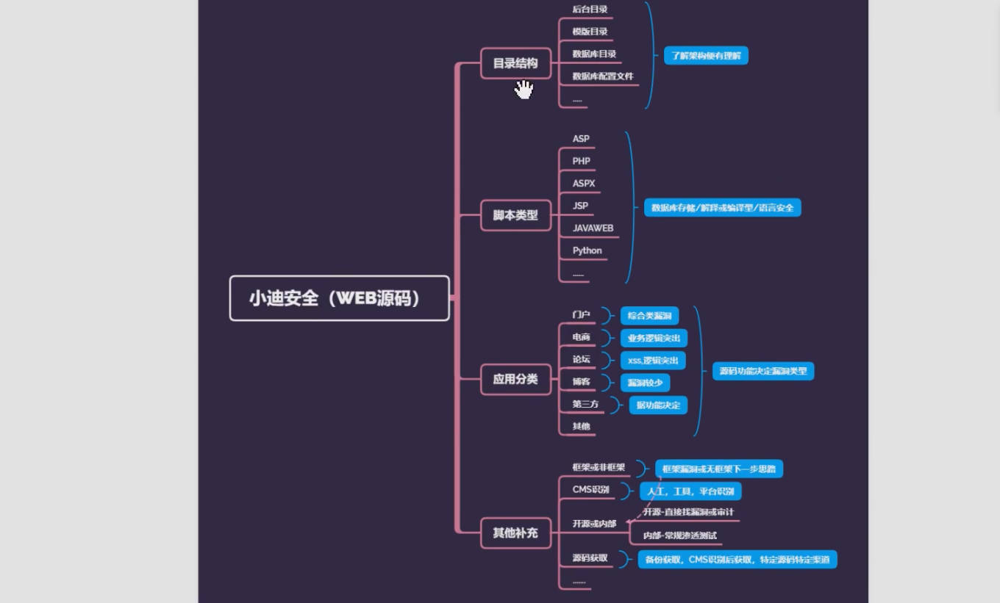
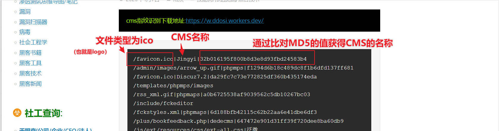

SEC学习-0005-基础
web源码拓展，CMS
前言
WEB源码在安全测试中是非常重要的信息来源，可以用来代码审计漏洞也可以用来做信息突破口，其中WEB源码有很多技术需要简明分析比如:
- 获取某ASP源码后可以采用默认数据库下载为突破
- 获取某其他脚本源码漏洞可以进行代码审计挖掘或分析其业务逻辑等
总之源码的获取将为后期的安全测试提供了更多的思路
apk抓包分析
apk的抓包：使用逍遥模拟器挂burp代理即可。
-> 这个配置前面讲过，但可能出了点问题，后面再修补吧。
aginux网站漏洞扫描(未授权时别乱扫).安装使用教程如下：
推荐资料1
推荐资料2
推荐资料3
抓apk的时候，放head+网址。
多后缀解析漏洞
其他漏洞去漏洞靶场vulhub上整出来就行。
这里涉及了一个apache的文件上传多后缀解析漏洞。相当于上传sec.php.jpg文件，解析时被当作php文件解析。(文件上传漏洞)
如何看脚本类型
根据数据库反推脚本类型。
看搭建平台。
谷歌快照，抓数据包。
找不出类型：脚本伪静态。
phpsession jspsession
文件上传是网站源码控制的，我们只是在上传时做了一些处理，结合中间件上传漏洞使得其可以绕过验证。
web源码
知识点:
脚本类型选择上的不同会造成安全漏洞类型上的不同。

目录结构 ==>了解框架便有理解 |
CMS识别
注：未经授权对网站进行扫描是犯法的，也包括CMS扫描。
HTTP响应头检测：检查网站响应头中的Server字段和X-Powered-By字段，通过判断这些字段来确定网站所使用的CMS。 |
思路分析
ASP，PHP源码分析
识别CMS有
人工观察
- 手工识别，看网站是哪种文件的index，再识别网站的某些关键字辨别CMS框架
- 当遇到类似的源码框架时，可以自己去下载一个雷同的框架，找到对应的账号密码存放点，找到了开源框架下的账密默认存放位置后，就可以尝试对使用这个开源框架的服务端对应默认位置进行破解了
工具(需要长期更新和维护)
- 一般cms都有特定的文件，只需要识别特定的文件便可以判断
- 扫描CMS特有文件是否存，再判断是什么CMS库
- 字典：Lucifer ddosi
- 懒得上网去下cms字典的话可以在我这下，可能不会实时更新。Lucifer ddosi
- ddosi大量使用md5值进行比对，导出网站的logo，使用cmd命令”certutil -hashfile 文件名称 MD5”进行获取
平台

本博客所有文章除特别声明外，均采用 CC BY-NC-SA 4.0 许可协议。转载请注明来自 矢幽武博客！
 wechat
wechat alipay
alipay
相关推荐


评论
公告
威 武 不 屈 ,成 为 自 己 不败的 信条, 剑 走 偏 锋 ,缥 缈 孤 鸿 影 --孤志

微信号：无
QQ：无
--------------------------------每日更新指南：
刷题/记录总知识一般会沿用上次的文档
学习新知将新开文档